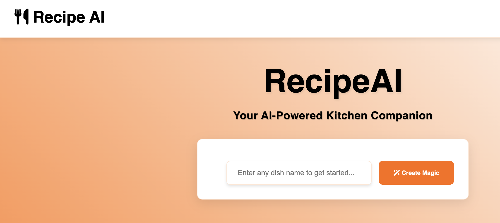

My Projects
Annadata Kisan Assistance
Annadata Kisan Assistance is a tool that enables farmers to analyze soil quality through a photo, detecting factors like composition, and nutrient deficiencies not detectable by touch. It provides data-driven insights to help optimize crop health and improve yields.

Recipe AI
RecipeAI is a smart and user-friendly platform designed to simplify cooking at home by addressing common challenges faced by home cooks. Whether you're a beginner, an experienced cook, or someone with limited time or ingredients, RecipeAI provides personalized solutions to make cooking effortless and enjoyable.